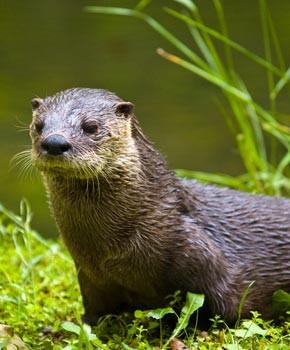

Estos son algunos de los habitantes del parque:
La nutria europea palertica (Lutra lutra) es un mamifero carnivoro de habitat acuatica. Se alimenta de peces, ranas y pequeas presas que caza en el río- Cerca de sus lugares de cobijo, podremos ver toboganes que crean para llegar rápidamente al agua.
El buitre leonado (Gyps fulvus) es un ave rapaz, una de las ,aypres que puede encontrarse en la Peninsula Iberica. Su alimentación principal es ña carroña, que localiza con su aguda vista.
La gineta (Genetta genetta) es una especie de mamifero carnivoro. Son grandes trepadorea muy agiles y grandes cazadores de pequeñps animales. Aunque también se alimentan de los frutos del bosque que se pueden encontrar en el parque.